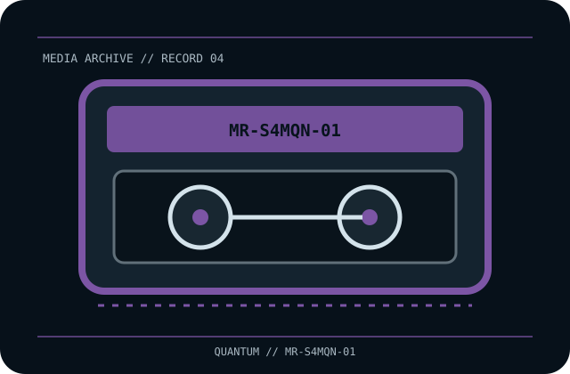

[ REMOVABLE MEDIA // MAGNETIC TAPE ]
Quantum DLTtape S4 800 GB Cartridge (MR-S4MQN-01)
Quantum DLTtape S4 generation, half-inch eMP60 magnetic tape cartridge; rewritable data medium. This record identifies the media only; drive, host interface, firmware, software and any enclosure are separate.

EXACT SKU: Quantum MR-S4MQN-01. The record distinguishes nominal uncompressed capacity from any compressed estimate and documents generation-specific host compatibility.
Format generation, capacity and compatible drives
| Manufacturer / exact SKU | Quantum MR-S4MQN-01 |
|---|---|
| Format / generation | Quantum DLTtape S4 generation, half-inch eMP60 magnetic tape cartridge; rewritable data medium. |
| Native capacity | 800 GB native (uncompressed). |
| Compressed capacity | Up to 1.6 TB at the nominal 2:1 compression assumption; actual stored capacity depends on data and drive compression. |
| Compatible drive generations | Quantum DLT-S4 generation drives; verify exact DLT-S4 drive model, firmware and library qualification. Do not assume the similarly sized DLTtape IV or SDLT drives can use S4 media. |
| Interface and scope | The cartridge/disc has no direct host-computer interface. The compatible drive supplies its own SAS, Fibre Channel, SCSI, USB or other host connection; check the exact drive specification and driver/software chain. |
| Compatibility caveat | The S4 designation is the media/drive generation; 1.6 TB is a nominal compressed estimate, not extra native capacity. Verify model, firmware, cleaning process and library support before insertion or migration. |
Tape handling and preservation
Keep in its original protective case and within the drive/media manual’s temperature and humidity limits. Avoid dust, smoke, strong magnetic fields, moisture, impact and rapid climate changes. Do not touch tape or open the shell; checksum and restore-test copied data, and retain multiple copies on separate systems.
- Document the exact printed model, serial/batch or date code, write-protect/WORM status and source of the medium.
- For valuable data, keep at least two independently verified copies, record checksums, test restoration and plan migration before compatible hardware becomes unavailable.
Model-specific preservation and compatibility notes
Preservation note: magnetic tape is a format-dependent, obsolescence-prone medium. Keep a verified reader path and independent copies.
The S4 designation is the media/drive generation; 1.6 TB is a nominal compressed estimate, not extra native capacity. Verify model, firmware, cleaning process and library support before insertion or migration. Never infer interoperability from a similar cartridge shell, connector, brand or family name; confirm drive-generation support in the exact manufacturer's manual.
Manufacturer and archival references
- DLTtape S4 cartridge instruction leaflet — Internet ArchiveArchived Quantum cartridge leaflet for media identity and care.
- Quantum — media compatibility guidesManufacturer drive/media compatibility guidance.
- Quantum DLTtape S4 data sheet (archived document copy)Generation-specific specifications and nominal 800 GB / 1.6 TB capacity.
Capacity, compatibility and handling are specific to this model and its supported drive generation. For legacy equipment, preserve the manual and test an end-to-end read before relying on the cartridge for migration.